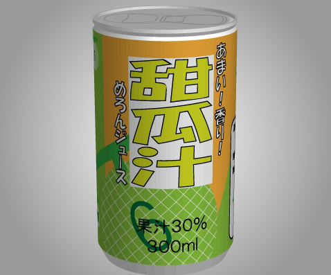

あける。第六回「甜瓜汁」

END数：1
・正面
メロンに書かれた『6』を確認する。
・左
『100』と『1』がかかれたメロンを確認する。
箱の蓋が閉まっているのを順番に開けていくため、『右・左・上・下・左・右・下・上・左・右』の順に押す。
でてきた『122』と書かれたメロンを確認する。
バーコードの左端をよく見ると、『H Lo』と書いているので、隣の棒を押し、『H』から『Lo』に変える。
バーコードを押すと、バーコードが上がり、下に『20』と『100』が書かれたメロンがあるので確認する。
・右
『10』と『1』が書かれたメロンを確認する。
下にあるメロンに表示される色をヒントに、『緑・赤・緑・赤・緑・緑・緑・赤・赤・緑・緑』と押す。
・下
正面・右・左で確認したメロンの数字をヒントに□□□を『360』に合わせ、青いボタンを押す。
（6+100+122+1+20+100+10+1=360）
・上
取っ手を押す。